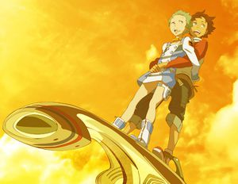
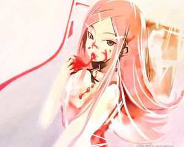
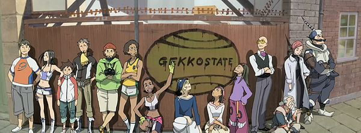

Eureka Seven
 De: La Frikipedia, la enciclopedia extremadamente seria.
De: La Frikipedia, la enciclopedia extremadamente seria.
 Aqui vemos a los personajes principales.(Si te fijas bien, Lento se pone medio guarro.)
Eureka seven o como otros mejor la conocen, con el nombre de "Eureka Semen" es un anime sobre mechas ( pinches maquinas expendedoras de refresco ), en esta serie son piloteados por un monton de ilusos que creen en algo llamado "olas", en las cuales estas máquinas de refrescos gigantes, pueden surfear con unas tablas, muy parecidas a las de surf, pero estas son tamaño jumbo y de acero, la cual desprende una luzecita verde llamada flujo de olas, en la cual estas maquinas expendedoras de gaseosas gigantes pueden andar, como los eskato, vuela,vuela como gay en sus tablas.
De que chingaos trata
Todo comienza con renton el marica, un muchacho de 14 años que vive con su abuelo, que es un cabrón, que solo se la pasa jodiendo a su nieto que es renton, este renton es el personaje "principal" de esta pinche serie llamda erueka semen. Renton el marica vive en un pinche jodido pueblo llamado "bell forest", el cual renton piensa que la ciudad mas jodiada de todas, y que por puta culpa de la ciudad a el le tocó el mas jodido estilo de vida, el de mecánico y vivir con su abuelo, que por cierto este último en ocaciones le a regalado violines y cojines a su nieto, en estos últimos cumpleaños de renton.Renton el marica vive en el taller junto con su abuelo y es fanatico del "gekostate", la cual es una banda de libertadores hippies, los cuales se la pasan vuela y vuela como gays en sus tablitas de nena, dentro de sus máquinas expendedoras de refrescos llamadas "LFO"(Operacion Busqueda de Luz, en español).
Una noche mientras renton estaba haciendose la "paja" en la bodega en la que vive, un "LFO" se estrella es su vodega, y de ese "LFO" sale una chica miembro del "gekkostate" y de nombre de eureka, la cual le pide al pendejo de renton, que le de una "checada" a su maquina......
Luego, al siguiente dia renton el marica revisa el "LFO" de eureka llamado "Nirvash type zero", y le pregunta a esta, por que no funciona su máquina, y esta le responde : "Es que esta maquina no funciona si hay un maricon abordo, debes de entender eso" (Nota: véase el enlace externo)
Luego de haber descubierto el problema de su máquina, el pinche abuelo de renton, interrumpe, el agazajo que se estaba dando rento con eureka, dándole el abuelo de rento a eureka una madre llamada "amita drive" la cual hara que su máquina funciones sin importar que un maricón este a bordo de ella, momentos después el ejército, que se quiere surtir bien rico a eureka, comienzan a atacar el taller donde están, después de esto renton deja a su violador abuelo para comenzar sus aventuras como mienbro del "gekkostate"
Los que se dicen llamar personajes
Eh, aqui una lista completa con cada personaje de esta jodida serie, la cual se nota que los cabrones que la hicieron, se rompieron la cabeza pensando, para poder crear estos personajes, tan, pero tan originales, como el mismo refresco de cola.
 He aquí una tierna e inocente imagen de anemone con eureka, la cual solo le demuestra a esta, lo mucho que le gusta la mermelada de
fresas....
Los que se dicen llamar asi mismo los buenos
- Renton thorston: renton el marica, que vive con su abuelo
- Eureka: miembro del "gekkostate", ademas eureka es una especie de no ser humano llamados "coralians", piloto del nirvash, ademas se le adjuntan varios cargos en su contra cuando era soldado de la confederacion, los cuales son :
- Crimenes contra la humanidad
- Genocidio cultural etnico,racial, contra hippys y wombats.
- Crimenes de guerra
- Se le culpa del extermino de mas de 6 millones de wombats, durante el holocausto de marsupiales que tuvo lugar el año 666 d.c al 1945 d.c.
- Cuenta con mas de 13 cargos en un videoclub, ademas de contar con varias peliculas sin devolber.
- Es buscada por el FBI(Federacion de Biscochos Internacional), pór ebacion de impuestos.
- Tripulacion de "gekkostate": estos son un montón de pendejos que le harán la vida imposoble al pendejo de renton durante todo el resto de la serie, pero aqui los tienes:
 He aquí a todo el gekko-state.
- Matthieu: es un negro cucurumbero que maneja un LFO amarillo.
- Hilda: es la pendeja que siempre handa cuidando al pendejo que acabo de mencionar arriba.
- Stoner: alias el "che-guevon", apodo dado por toda la tripulcion, no por parecerse al che-guevara, si no por guevon, por que lo unico que se la pasa haciendo es handar tomando putas fotografias con su puta camarita de miarda sacada de una caja de cereal.
- Ken-go: es el cabrón encargado de la artillería del "gekko-go", cuenta con una inmensa panza caguamera, y un mostacho hecho de bello púbico.
- Mishcha: es la enfermera, doctora, pediatra, ginecóloga y proctologa particular del "gekko-state".
- Gonzy: este es un viejo hijo de la chingada que se sabe que chingado papel juega en esta pinche serie, siempre se le encuentra senado en una alfombra que le robo al genio de aladino, bebiendo un té de "llervas" especialies solo para él.
- Jobs: es una maldita pelona, alias "cabeza de rodillia", que se encarga en el funcionamiento digital de la puta nave.
- Woz: es una friki experto en el hacker, y búsqueda de pr0n en la red, siempre lleva pegado a la cabeza 2 pedazos de rollo de papel higiéico, por si lo necesitase para limpiar algun fluido suyo...
- Hap: amigo, confiedente, socio y camarada de holland, el cual este durante toda la serie siempre aparece con los ojos cerrados, y se cree, que no tiene ojos y esta ciego debido a que nunca los abre.
- Giget: es una chica tipo rapera con pantalones talla 458 mas grande de lo que deberia usar, es la ano-amante de moondoggie.
- Moondoggie: es, despues de renton el miembro mas nuevo del "gekko-state", y al parecer este se ciente celosa por renton ya que a este se lo agarraron de su "cerdito", y como venganza siempre este le handa lanzando miradas de puñal a renton.
- Holland: el viene siendo el lider del "gekkostate" y guaro particular de eureka, el cual le rompera la mandarina en gajos a renton, cada vez que vea a este con eureka.
- Talho: es la ano-amante de holland,compañera y piloto del "gekkogo"
- Los chamacos de eureka: estos son los hijos ilegitimos de eureka y bienen en 3 colores diferentes los cuales, son amarillo, es maurice, blanca es maeter y de color choco-milk es linck, estos 3 mocosos eureka los adopto como sus hijos tras haber asesinado a sus padres en un combate cuando era soldado de la federacion, ademas lo hizo para que recibiera un cheque mensual de $4,500 dollares, por pagos de manutencion y pencion alimenticia por parte del gobierno. Esta eureka me salio mas cabrona que bonita, o no?.
Los malos, que se pasaron al "lado oscuro"
- Anemone: es la piloto del "nirvash type end", está algo loca, debido a que le baja y sube su menstruación le dan fuertes dolores de cabeza, es inestable y le dan cambios de personalidad lo cual la hace ver como una loca demente, le sangra la nariz si no se inyecta una droga especial, y adora la mermelada de fresa.
- Dominic: es un oficial de ejercito confederado, el cual este realizo su entrenamiento militar en el fuerte "maricotas", este biene siendo el chico el cual se enamora de anemone, o solo quiere follarsela, quien sabe. Anemone se agarra a dominic como su pendejo particular, el cual hara todo lo que la cabronzita de anemone le pida, y estara para cuidar y proteger a anemone y a su bola de blanca de bello puvico llamdado gayliver, este ultimo muere, al haserlo carnitas el cabron de dominic.
- Dewey novak: el es el hermano mayor del cabrón de holland, el cual es líder del ejercito federado, el cual este último simepre se ponia celosa, cuando se encontraba alado de su hermano. También en su infacia con holland este abusa en ocasiones de este.
- Escuadrón ageha: es una unidad anti-comunista-coralian, el cual esta formada por 5 niñas que dewey sacó mediante varias transacciones de bolsillo del DIF, para combatir a los coralian, y tambien para follarselas, una vez que se habia aburrido de la puta de anemone.
Personajes de relleno para poder cubrir los 30 minutos de cada episodio
- Charles y ray beams: estos 2 son una pareja de mercenarios-hippies los cuales les hacen todos los mandados que el gobierno le pida, tambien cuando renton el marica se fuga del "gekko-go" se encuentra con estos 2 follando en el parque, mientra que este estaba buscando su comida en la basura, y estos 2 adoptan a renton como su hijo temporal, ya que se habian aburrido de follar durante todo el día, lo adoptan como si fuera un perrito callejero y por que daba lastima el cabron de rento.
- Alex thorston: es el abuelo gay de renton, el cual siempre lo handa jodiendo al puto de renton. es mecanico y cuando era joven trabajaba en una fundidora gay.
- Diane thorston: es la hermana mayor de renton, pero se habia fugado de la casa, al descubrir que renton bolteaba chueco.
- La amiguitas de renton del colegio: Pues este es un grupo de niñas precosmente pubertas, las cuales veian como a un rarito a renton, todo el tiempo, ya que este se la pasaba todo el dia mirando su "compac drive", con la ilusion de que alguien le enviara un mensaje homo-erotico.
- Mejor amigo del abuelo de renton: No me se siquiera su nombre y que papel desarrollo en esta serie ya que yo estaba mas ocupado mirando a mi perro lamerse las bolas cuando habian partes aburridas en la serie, asi que no se nada de este cabron, lo unico que se es que era el ano-amante del abuelo de renton.
- Alex thorston: Es el padre de renton y diana, el cual este murio como un heroe, ya que le puso fin al "verano del amor hippy", golpeando a hippys con su cachiporra, murio y se conbirtio en un heroe despues de haber masacrado a mas de 6000 hippy-comunistas, murio violado en accion, en cumplimiento del deber, golpeando hippys, y este al convertirse en heroe, sus 2 hijos: renton y diane, fueron siempre lambisconeados pòr el gran acto heroico que habia hecho su padre
- Yucatan-iglesias: Biene siendo como el tio de renton, el cual se dedica al cultivo de coca y maribuena, y renton en su niñes lo conocian en el pueblo donde vvian como "el tio escobar".
- El consejo de los sabios: Son un monton de viejitos, prueba vivientes de la exixtencia de los dinosaurios, cada vez que aparecen solo hablan de politica, y al igual que el mejor amigo del abuelo de renton, me distraje, viendo a mi perro lamerse las bolas.
Curiosidades de la serie
- Eureka es la exclamacion del sabio griego arquimedes, gritando su nombre por las calles de grecia totalmente en pelotas, tras haber descubierto, la pagina de la "frikipedia", una pagina que esta de la puta madre, eureka, coño, eureka!!!.
- El nombre de maurice, uno de los chamacos de eureka, es tambien el del compositor frances "joshep maurice ravel", conpocitor frances, creador del "bolero de ravel".
- Anemone es el nombre de una chica "psiquicamente" inestable,(por que no me sorprende?)de la novela "coin locker babies", de ruy murakami, en la cual tambien aparece en la novela con su mascota gulliver, pero no de la misma forma, que en la serie eureka seven.
- El apellido de la familia de renton "thorston", son en realidad propiedad una fabrica de televisores, de marca de gran prestigio como, los televisores "Parnafonic" y "Sorcmy".
- Los LFO, al igual que los tranformers se pueden conbertir, en baños portatiles, en caso de emergensia.(ningun LFO cuenta con papel higienico incluido)
- El arma que se le be utilisar a charles-san en el transcurso de la serie, es un rifle "Mauser", aleman, modelo "Kar98", es un rifle de serrojo manual cuenta con una capacidad maxima de 5 tiros y utilisa balas calibre 7,92X57mm.
- Renton antes de unirse al "gekko-state", utilisaba su compac drive, como consolador.
- Talho-san solia ser hombre.
- Los creadores de los "LFO", son mitad judios. "Me digieron que eran judios" -Peter griffin, tras haber leido este articulo.
- Anemone guarda gran interes por la mermelada de fresas.
- Los "LFOS",causaron la extincion de los wombats.
- Eureka guarda gran parecido con dewey novak, debido a que ambos utilisan ese tan peculiar azul cielo en sus ropas.
- La pistola que se le be utilisar a dominic en el episodio en el cual se estrellan junto con renton, es una pistola "Glock17" luger, cuenta con una capacidad de 17 tiros, utiliza balas calibre 9mm parabellium.
- El correo electronico de eureka antes de desertar del ejercito era "mercenario1945@hotmail.com", ya que era muy buena con las armas como lo es con su boca y labios......"Es una maravilla en la cama" -Toda la tripulacion del "gekko-state".
- Renton es gay.
- El abuelo de renton es judio.
- Por lo tanto renton lo convierte en judio.
- La cancion preferida por eureka cuando ba a utilizar el "niravash" para masacrar pueblo es "aphex twin-come to daddy", tambien le gusta escucharla cuando ba a follar con anemone o realizar orgias.
- El verano del amor, hace referencia a 2 grandes acontecimientos socialies en la decada del 60', el primer verano del amor, en la cual era un concierto hippy que promovia la paz y la consebacion de los wombats, el segundo verano del amor: en la cual habia wombats tatando de salbar a los hippys del borde de la extincion, por el abuso de "maribuena". "Malditos hippys" -Cartman, tras haber leido esto.
- En la serie "ben 10", gwen tennyson, guarda gran parecido con eureka.
- Ahora que lo pienso, tambien de la misma serie "ben 10", ben tennyson guarda tambien gran parecido con renton, ya que hambos son unos pendejos y lo unico que quiere ben en toda la serie es tirarse a su prima gwen, y renton el de tirarse a eureka.
- Lo creas o no, "JOBS", es un skinhead, o simplemente una maldita pelona cabeza de rodila.
- A renton le gusta comer arros con popote y tambier tocar la trompeta.
- En bellforest renton tenia el apodo de "sopla nucas"...
- Y en el "gekko-state", cambio a "muerde almohadas".
- Y cuando se tira a eureka este cambian a "señor esclavo".
- A renton le gusta ver ganzitos.
- El arma que se le be utilizar a yucatan-san, en el episodio donde ban a comprar el grupo de hippyes fruta y un poco de maribuena, es un rifle semi-automatico estadounidense M-1 Garand, calibre 30.
- A anemone le gusta mas, ver gotitas que ver gototas, cuando llueve claro, esta...
- Eureka es adicta al pollo kentuchy.
- Renton es un marica.
- Anemone no usa bragas, cuando utiliza el "the end", pero eso si, se hecha su porcion de 2 kilos de talco.
- Durante todo el transcurso de la serie, talho y eureka, nunca se les bera hablando entre si, es mas nunca se le bera entablar conversacion alguna.
- Renton se masturba, con una foto del capitan cabernicola.
- A renton le gusta introducir su mienbro en el tanque de combustible, del nirvash.
- A anemone le encanta, handar hinalando pegamento HU,cemento, tiner, y quita esmalte, pero eso si, bien feliz la cabronzita.
- A renton le facina untarse crema de mani en las bolas, y hacer que un perro las lama.
- Cuanto es 100 pollos + 1 pollo + 2 huevitos = ¡ciento un pollo y dos huevos!, fue esactamente lo que dijo dominic, la primera vez que se a violo a anemone...
- Renton depende emocionalmente de la pornografia.
- Renton vive en un pinche pueblo de gays.
- Eureka, tiene tendencias a conbertirce en una promiscua ninfomana.
- Eureka sufre de riflefilia
- A talho-san le gusta dormir desnuda.
- Dominic, alparecer tiene un pesimo sentido de la orientacion, y siempre handa bien "brujula", por que solo se la pasa dando vueltas halo pendejo.
"El este es la direccion por donde cojemos el tenedor con la mano, ¿verdad?" -dominic, pidiendole orientacion a una vaca.
Enlaces externos
Autor(es):
- LVCIVS AVRELIVS
- Frikiman
- Roms
- Guilfer
- Azulejos
- Fallen Angel
- Mercenario1945
- Naruto hyuga
- NRikee
- AlemanH
Frikipedia 2005-2016, Licencia
GFDL 1.2 - Extraído por FrikiLeaks